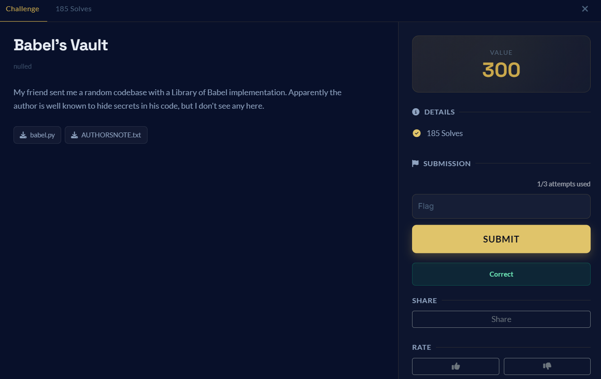

operator brief
Overview
Reversed a Library-of-Babel-style seed generator and decoded RGB triples as indexes into AUTHORSNOTE.txt.
Babel's Vault from boroCTF.
Crypto Writeups · Medium difficulty.

skills demonstrated
Skills Demonstrated
attack path
Timeline
Read the note and babel.py.
Reverse page_from_seed() into a seed.
Feed the seed into image_from_seed().
Decode RGB triples as indexes into the author note.
solution notes
Walkthrough
Challenge
Description:
My friend sent me a random codebase with a Library of Babel implementation. Apparently the author is well known to hide secrets in his code, but I don't see any here.
Flag format: boroCTF{}
Files provided:
AUTHORSNOTE.txt
babel.py
1. Initial Analysis
The challenge gives us a Python script that claims to implement a small “Library of Babel” generator.
The first interesting clue is in AUTHORSNOTE.txt. The author talks about old ciphers such as Caesar, Vigenere, XOR, and RSA, then says that older ciphers can still be used aesthetically if hidden well enough. The note also says the author wanted to create a cipher using the Library of Babel idea.
So the note is not just flavor text. It is probably part of the cipher.
2. Understanding babel.py
The script defines this alphabet:
ALPHABET = "ABCDEFGHIJKLMNOPQRSTUVWXYZabcdefghijklmnopqrstuvwxyz., "
This alphabet has 55 characters.
The script has two main functions:
def page_from_seed(seed: int): seed += HUGE_CONSTANT
chars = []
for _ in range(940): seed, remainder = divmod(seed, 55) chars.append(ALPHABET[remainder]) return "".join(chars)
This means the page text is generated by repeatedly converting the number into base 55.
The second function is:
def image_from_seed(seed: int): seed -= HUGE_CONSTANT_MINUS_ONE pixels = [] for _ in range(225): seed, r = divmod(seed, 256) seed, g = divmod(seed, 256) seed, b = divmod(seed, 256) pixels.append((r, g, b)) return pixels
This produces a 15x15 image, because:
15 * 15 = 225 pixels
Each pixel is an RGB triple. The program also prints the raw image values after displaying the image.
3. Key Observation
page_from_seed() generates exactly 940 characters.
AUTHORSNOTE.txt also contains exactly 940 meaningful characters after removing the trailing newline.
That strongly suggests that the author note is meant to be treated as a generated Babel page.
So instead of trying random seeds, we can reverse the page generation.
4. Reversing page_from_seed
The function does this:
seed, remainder = divmod(seed, 55) chars.append(ALPHABET[remainder])
This means every character in the page is one base-55 digit.
So to reverse it, we convert the author note back into a big integer:
number = 0 for i, ch in enumerate(author_note):
number += ALPHABET.index(ch) * (55 ** i)
Then we undo the huge constant:
seed = number - PAGE_CONSTANT
This gives us a valid seed that reproduces AUTHORSNOTE.txt.
5. Using the Recovered Seed
After recovering the seed, we use it with image_from_seed().
At first, the image itself does not clearly show the flag. But the raw RGB values are suspicious.
The first RGB values look like this:
(0, 0, 7)
(0, 1, 6)
(0, 3, 5)
(0, 4, 4)
(1, 0, 3)
...
Each RGB triple only contains digits from 0 to 9.
So each pixel can be read as a 3-digit number:
(0, 0, 7) -> 007
(0, 1, 6) -> 016
(0, 3, 5) -> 035
These numbers are indexes into the author note.
So:
index = r * 100 + g * 10 + b
character = author_note[index]
Doing this reveals the hidden message.
6. Solver Script
from pathlib import Path import re # Read files
author_note = Path("AUTHORSNOTE.txt").read_text().rstrip("\n")
babel_code = Path("babel.py").read_text()
# Extract alphabet ALPHABET = re.search(r'ALPHABET = "(.*)"', babel_code).group(1) # Extract the two huge constants page_constant = int(re.findall(r"seed \\+= (\\d+)", babel_code)[0]) image_constant = int(re.findall(r"seed -= (\\d+)", babel_code)[0]) # Step 1: Reverse page_from_seed() number = 0 for i, ch in enumerate(author_note):
number += ALPHABET.index(ch) * (55 ** i)
seed = number - page_constant # Step 2: Reproduce image_from_seed() image_seed = seed - image_constant pixels = [] for _ in range(225): image_seed, r = divmod(image_seed, 256) image_seed, g = divmod(image_seed, 256) image_seed, b = divmod(image_seed, 256) pixels.append((r, g, b)) # Step 3: Decode RGB triples as 3-digit indexes into the author note decoded = "" for r, g, b in pixels: index = r * 100 + g * 10 + b decoded += author_note[index] print(decoded[:50])
7. Output
The decoded message starts with:
boroCTFoneSeedCipherInInfinity
After that, the output becomes repeated T characters because the remaining RGB triples decode to index 000, and author_note[0] is T.
The meaningful hidden message is:
boroCTFoneSeedCipherInInfinity
Since the challenge gives the flag format as:
boroCTF{}
we wrap the secret part inside braces.
Final Flag
boroCTF{oneSeedCipherInInfinity}
proof locker
Evidence
AUTHORSNOTE.txt has the same 940-character length generated by page_from_seed().
The alphabet length is 55, turning the note into a base-55 number.
RGB triples from image_from_seed() are 3-digit indexes into the note.
final artifact
Flag
boroCTF{oneSeedCipherInInfinity}
after action report
Lessons Learned
- Matching lengths are often a cryptographic clue.
- Custom generators can usually be reversed by undoing arithmetic exactly.
- Seemingly visual RGB data may actually be an indexing layer.